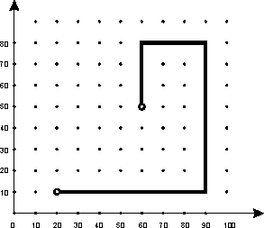

Home Page
F.A.Qs
Statistical Charts
Past Contests
Scheduled Contests
Award Contest
| Online Judge | Problem Set | Authors | Online Contests | User | ||||||
|---|---|---|---|---|---|---|---|---|---|---|
| Web Board Home Page F.A.Qs Statistical Charts | Current Contest Past Contests Scheduled Contests Award Contest | |||||||||
|
Language: Water pipe
Description The Eastowner city is perpetually haunted with water supply shortages, so in order to remedy this problem a new water-pipe has been built. Builders started the pipe from both ends simultaneously, and after some hard work both halves were connected. Well, almost. First half of pipe ended at a point (x1, y1), and the second half -- at (x2, y2). Unfortunately only few pipe segments of different length were left. Moreover, due to the peculiarities of local technology the pipes can only be put in either north-south or east-west direction, and be connected to form a straight line or 90 degree turn. You program must, given L1, L2, ... Lk -- lengths of pipe segments available and C1, C2, ... Ck -- number of segments of each length, construct a water pipe connecting given points, or declare that it is impossible. Program must output the minimum required number of segments.
 Constraints 1 <= k <= 4, 1 <= xi, yi, Li <= 1000, 1 <= Ci <= 10 Input Input contains integers x1 y1 x2 y2 k followed by 2k integers L1 L2 ... Lk C1 C2 ... Ck Output Output must contain a single integer -- the number of required segments, or −1 if the connection is impossible. Sample Input 20 10 60 50 2 70 30 2 2 Sample Output 4 Source Northeastern Europe 2003, Far-Eastern Subregion |
[Submit] [Go Back] [Status] [Discuss]
All Rights Reserved 2003-2013 Ying Fuchen,Xu Pengcheng,Xie Di
Any problem, Please Contact Administrator